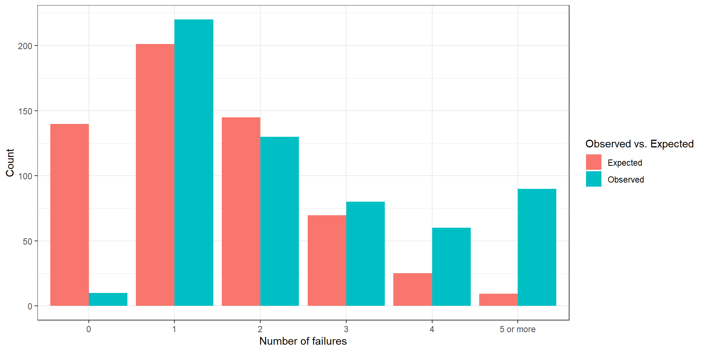
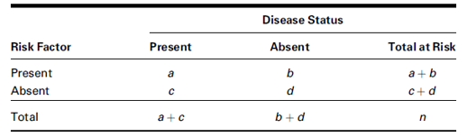

Eye
Hair Brown Blue Hazel Green
Black 32 11 10 3
Brown 53 50 25 15
Red 10 10 7 7
Blond 3 30 5 8Analysis of Frequencies
Lecture 10
Outline
- Introduction to Categorical Data
- Goodness-of-Fit Tests
- Test of Homogeneity
- Test of Independence
- Fisher’s Exact Test
- Symmetry Tests
- Measures of Association
Categorical Data
Associations between Categorical Data
Often, we are interested in testing for association between categorical data. These variables can be nominal or ordinal.
Note
Suppose we want to test whether there is an association between the type of hospital a patient is admitted to and their diagnosed conditions.
Contingency Tables
A contingency table is a table of frequencies or counts for each possible combination of the variables.
Example
The hair and eye color of male statistics students were measured. The findings were summarized in the following contingency table.
Contingency tables in R
You can use xtabs() to produce contingency tables in R. The data should be formatted such that the two variables are defined by two columns. If these columns are x and y from a data frame df, the sample code would look like:
x will be assigned as the row variable, y will be assigned as the column variable.
Example
The data set penguins preloaded in R includes data from penguins at the Palmer Archipelago in Antarctica.
Chi-Squared Distribution
Tests involving categorical data use the chi-squared distribution to approximate the distribution of the test statistics.
The chi-squared distribution is defined for non-negative values \((0,\infty)\).
The chi-squared distribution can be defined by the degrees of freedom \(\nu\) or \(df\).
Like the t-distribution, we only need one value for the degree of freedom.
Suppose \(Z\) follows the standard Gaussian distribution N(0,1). Then \(Z^2\) follows a chi-square distribution with 1 degree of freedom.
The mean of the chi-squared distribution is \(k\), and the variance of the chi-squared distribution is \(2k\).
Goodness-of-Fit Tests
Goodness of Fit
Suppose we want to test if the data follows a specified distribution.
Example
Suppose we want to know if a six-sided die is fair. We would expect to roll the numbers uniformly after a large number of throws. However, there will be variability due to randomness. The goodness-of-fit test will provide information if we have evidence of deviating from the pre-specified uniform distribution.
Hypothesis Test
The null hypothesis of the goodness-of-fit test is that the observed data follows the specified distribution, while the alternative is that it does not follow the specified distribution.
Test Statistic
Suppose there are \(k\) bins separating the data and that the distribution provides an expected number/counts of events \(E_i\) for \(i=1,2,...k\). If the observed number/counts in the data is \(O_i\), we define the test statistics \(Q\) such that
\[ Q = \sum_{i=1}^k \frac{(O_i - E_i)^2}{E_i} \]
Important
Q approximately follows the chi-squared distribution with \(k-1\) degrees of freedom, denoted by \(\chi^2_{k-1}\).
For the chi-squared distribution assumption to be valid, the expected value of each bin should be greater than 5.
p-value calculation
The p-values can be calculated using the chi-squared distribution such that:
\[ p-value = P(\chi^2_{k-1} \geq Q) \]
R implementation
There are two ways to check for goodness of fit: formal statistical analysis and exploratory data visualization.
For discrete distributions, the expected values can be calculated using the PDF functions ( dpois, dbinom) for discrete distributions, and CDF functions (pnorm,punif, pt).
The chisq.test function performs the chi-squared test of goodness of fit. The function needs a vector of the observed variables, x_observed and a vector of probabilities p.
Important
The chisq.test() function includes a continuity correction in calculating the test statistic and the corresponding p-value. If we want the uncorrected statistic and p-value, we need to specify correct=FALSE.
Once the expected values are calculated, we can plot these values using ggplot().
Example
Electronic integrated circuits are produced from thin wafers that are cut from some material. The wafers produced sometimes have tiny flaws on them that make part of the wafer unusable. Suppose we produce 1000 wafers and for each we determine the number of flaws.
| Number of Flaws | Observed Frequency |
|---|---|
| 0 | 10 |
| 1 | 220 |
| 2 | 130 |
| 3 | 80 |
| 4 | 60 |
| 5 or more | 90 |
Test whether these data follow a Poisson distribution with \(\lambda=1.44\). Visualize the observed and expected counts to support the results of the test.
We specify the observed variable.
[1] 10 220 130 80 60 90[1] 590The specified distribution is the Poisson distribution. We can then calculate the expected probabilities using dpois and ppois.
expected <- c(
dpois(0,lambda=1.44),
dpois(1,lambda=1.44),
dpois(2,lambda=1.44),
dpois(3,lambda=1.44),
dpois(4,lambda=1.44),
1-ppois(4,lambda=1.44)
)
expected[1] 0.23692776 0.34117597 0.24564670 0.11791042 0.04244775 0.01589140[1] 1[1] 139.787378 201.293824 144.931553 69.567145 25.044172 9.375928All expected counts are above 5. We can now use the chi-square approximation for the p-value.
Chi-squared test for given probabilities
data: observed
X-squared = 867.42, df = 5, p-value < 2.2e-16The test statistic is 867.4246622 with a p-value < 2.2e-16. We reject the null hypothesis. We have sufficient evidence to conclude that the observed data does not follow the Poisson distribution.
The function bind_rows appends the expected data frame to the observed data frame.
library(tidyverse)
df_observed <- data.frame(bin = c(0,1,2,3,4,"5 or more"),y=observed,type="Observed")
df_expected <- data.frame(bin = c(0,1,2,3,4,"5 or more"),y=total*expected,type="Expected")
df <- bind_rows(df_observed,df_expected)
ggplot(df,aes(x=bin,y=y,group=type,fill=type)) +
geom_bar(position="dodge",stat="identity") +
theme_bw() +
labs(x="Number of failures", y="Count",fill="Observed vs. Expected")
Exercise
In the “nighttime” lottery run by the state of Texas, three numbers are selected from the digits 0 through 9. The frequencies of the first digit selected over a period of almost 30 years (from 1993 to 2023) are shown below for each of the 9,215 days.
| Digit | Frequency |
|---|---|
| 0 | 918 |
| 1 | 905 |
| 2 | 908 |
| 3 | 916 |
| 4 | 900 |
| 5 | 911 |
| 6 | 963 |
| 7 | 948 |
| 8 | 937 |
| 9 | 909 |
Test whether each digit is equally likely to have been selected in the Texas “nighttime” lottery.
We specify the observed variable.
[1] 918 905 908 916 900 911 963 948 937 909[1] 9215The specified distribution is the discrete uniform distribution. We can then calculate the uniform probabilities as 1/10 (10 bins).
[1] 0.1 0.1 0.1 0.1 0.1 0.1 0.1 0.1 0.1 0.1[1] 1 [1] 921.5 921.5 921.5 921.5 921.5 921.5 921.5 921.5 921.5 921.5All expected counts are above 5. We can now use the chi-square approximation for the p-value.
Chi-squared test for given probabilities
data: observed
X-squared = 4.2219, df = 9, p-value = 0.8962The test statistic is 4.2219208 with a p-value 0.8962084. We fail to reject the null hypothesis. We have insufficient evidence to conclude that the digits are not equally likely to be chosen for the “nighttime” lottery.
library(tidyverse)
df_observed <- data.frame(bin = 0:9,y=observed,type="Observed")
df_expected <- data.frame(bin = 0:9,y=total*expected,type="Expected")
df <- bind_rows(df_observed,df_expected)
ggplot(df,aes(x=as.factor(bin),y=y,group=type,fill=type)) +
geom_bar(position="dodge",stat="identity") +
theme_bw() +
labs(x="Number of failures", y="Count",fill="Observed vs. Expected")
Test of Independence
Test of Independence
Suppose we are interested in a contingency table made from two distinct categorical variables.
Assumptions
Suppose the row variables has \(r\) levels and the column variables has \(c\) levels. This implies that any unit/subject can fall in any of the \(rc\) categories.
Hypothesis Test
The null hypothesis for the test of independence is that the row and column variables are independent of each other, while the alternative hypothesis is that the row and column variables are not independent.
Null Hypothesis Assumption
Suppose we define \(p_{ij}\) as the probability of a unit to be found at row \(i\) and column \(j\), denoted by \((i,j)\). We also define \(p_{i\cdot}\) and \(p_{\cdot j}\) as the respective probabilities of finding the unit at row \(i\) and finding the unit at row \(j\). The assumption of independence implies that for all \(i\) and \(j\),
\[ p_{ij} = p_{i\cdot} p_{\cdot j} \]
Note
Under the assumption that the null hypothesis is true, the expected counts for each cell can be calculated as:
\[ E_{ij} = r_ic_j/n \]
where \(r_i\) is the row total for row \(i\), \(c_j\) is the column total for column \(j\), and \(n\) is the total sample size.
Test Statistic
The test statistic compares the deviation of the observed data to the expected data similar to the goodness-of-fit.
\[ Q = \sum_{i=1}^r \sum_{j=1}^c \frac{(O_{ij}-E_{ij})^2}{E_{ij}} \]
The test statistic approximately follows a chi-squared distribution with degrees of freedom \((r-1)(c-1)\), \(\chi^2_{(r-1)(c-1)}\) where \(r\) and \(c\) are the total numbers of rows and columns, respectively.
Important
It is important to check the expected number of events for each cell. If the expected number of events is less than 5 for 25% of the cells, the chi-square distribution does not hold.
p-value
The p-value can be calculated using the probability \(P(\chi^2_{(r-1)(c-1)} \geq Q)\).
R implementation
The chisq.test() can also be used to perform tests of independence.
Note
When dealing with data sets, it would be beneficial to create a contingency table with xtabs() first to check for data sparsity (low cell counts) before using it as an input in chisq.test().
Tip
chisq.test() calculates the expected values using the chisq$expected option.
Example
Consider the sleep health data, SleepHealthData.csv.
Test whether gender (variable gender) is associated with reported sleep disorders (variable sleep_disorder. Use a significance level of 0.01.
Check for sparsity of data first.
sleep_disorder
gender Insomnia None Sleep Apnea
Female 36 82 67
Male 41 137 11
Pearson's Chi-squared test
data: sleep$gender and sleep$sleep_disorder
X-squared = 54.306, df = 2, p-value = 1.613e-12 sleep$sleep_disorder
sleep$gender Insomnia None Sleep Apnea
Female 38.08824 108.3289 38.58289
Male 38.91176 110.6711 39.41711All expected values are above 5, which means the chi-squared assumption is valid. The p-value is 1.6128634^{-12}, the test statistic is 54.3060201 with 2 degrees of freedom. At a significance level of 0.01, we reject the null hypothesis. We have sufficient evidence to conclude that the gender and occurrence of sleep disorder are not independent.
Exercise
Consider the sleep health data, SleepHealthData.csv.
Test whether stress level (variable stress_level) is associated with reported sleep disorders (variable sleep_disorder). Treat stress level as an ordinal categorical variable. Use a significance level of 0.01.
Check for sparsity of data first.
sleep_disorder
stress_level Insomnia None Sleep Apnea
3 1 40 30
4 24 43 3
5 6 57 4
6 2 43 1
7 41 3 6
8 3 33 34
Pearson's Chi-squared test
data: sleep$stress_level and sleep$sleep_disorder
X-squared = 240.2, df = 10, p-value < 2.2e-16 sleep$sleep_disorder
sleep$stress_level Insomnia None Sleep Apnea
3 14.617647 41.57487 14.807487
4 14.411765 40.98930 14.598930
5 13.794118 39.23262 13.973262
6 9.470588 26.93583 9.593583
7 10.294118 29.27807 10.427807
8 14.411765 40.98930 14.598930All expected values are above 5, which means the chi-squared assumption is valid. The p-value is 6.2217174^{-46}, the test statistic is 240.1993685 with 10 degrees of freedom. At a significance level of 0.01, we reject the null hypothesis. We have sufficient evidence to conclude that the stress level and occurrence of sleep disorder are not independent.
Test of Homogeneity
Test of Homogeneity
Suppose the sampling strategy was to select a fixed sample size per group, and measure the response for each unit/individual.
Note
If the samples are stratified per group, the groups are not random. The response remains random. The margins for the grouping variable, typically assigned in the rows, are fixed in advance.
Homogeneity vs. Independence
Important
Because people assigned to/sampled from groups are no longer random, there is no sense to test for independence. Instead, we test whether the probability of being in each of the outcome groups is the same across all treatments.
Hence, the test is referred to as the test of homogeneity.
Hypothesis Test
The null hypothesis is that the marginal probability of the outcome variable is the same across all the groups/populations/treatments considered in the study.
The alternative hypothesis is that at least one marginal probability is not equal to the others.
Note
This test is similar to comparing the difference of two proportions for a 2x2 contingency table.
Null Hypothesis Assumption
Suppose we define \(p_{ij}\) as the probability of a unit to be found at row \(i\) and column \(j\), denoted by \((i,j)\). The assumption of homogeneity assumes that the marginal probability across the columns are the same. Hence,
\[ p_{ij} = c_j/n \]
Note
Under the assumption that the null hypothesis is true, the expected counts for each cell can be calculated as:
\[ E_{ij} = r_ip_{ij} = r_i(c_j/n) \]
where \(r_i\) is the row total for row \(i\), \(c_j\) is the column total for column \(j\), and \(n\) is the total sample size.
Test Statistic
The test statistic compares the deviation of the observed data to the expected data similar to the goodness-of-fit.
\[ Q = \sum_{i=1}^r \sum_{j=1}^c \frac{(O_{ij}-E_{ij})^2}{E_{ij}} \]
The test statistic approximately follows a chi-squared distribution with degrees of freedom \((r-1)(c-1)\), \(\chi^2_{(r-1)(c-1)}\) where \(r\) and \(c\) are the total numbers of rows and columns, respectively.
Important
Note that the test statistic is the same for independence and homogeneity tests, but the assumptions and hypotheses are different.
It is important to check the expected number of events for each cell. If the expected number of events is less than 5 for 25% of the cells, the chi-square distribution does not hold.
p-value Calculation
The p-value can be calculated using the probability \(P(\chi^2_{(r-1)(c-1)} \geq Q)\).
R Implementation
The R implementation of the homogeneity test is similar to that of the independence test.
Example
The data set covid.csv includes data from a clinical trial for treatments of COVID-19. Suppose that subjects are randomly assigned to one of two treatments: an experimental drug and a placebo (best available treatment).
Rows: 1,297
Columns: 3
$ ID <int> 1, 2, 3, 4, 5, 6, 7, 8, 9, 10, 11, 12, 13, 14, 15, 16, 17, 1…
$ Treatment <chr> "Experimental", "Experimental", "Experimental", "Experimenta…
$ Outcome <chr> "Not Hospitalized", "Not Hospitalized", "Not Hospitalized", …We want to test whether the marginal probabilities of each outcome (not hospitalized, hospitalized, and died) are the same across each treatment. Use a significance level of 0.05.
Create a contingency table first to test whether there are sparse counts.
Outcome
Treatment Died Hospitalized Not Hospitalized
Experimental 11 67 572
Placebo 23 81 543We implement the chi-squared test using chisq.test().
Pearson's Chi-squared test
data: covid$Treatment and covid$Outcome
X-squared = 6.307, df = 2, p-value = 0.0427 covid$Outcome
covid$Treatment Died Hospitalized Not Hospitalized
Experimental 17.03932 74.17116 558.7895
Placebo 16.96068 73.82884 556.2105
Pearson's Chi-squared test
data: contingency
X-squared = 6.307, df = 2, p-value = 0.0427All expected values are above 5, which means the chi-squared assumption is valid. The p-value is 0.042703, the test statistic is 6.3069732 with 2 degrees of freedom. At a significance level of 0.05, we reject the null hypothesis. We have sufficient evidence to conclude that the marginal probabilities of the outcome variable differ across treatments.
Exercise
The following data is from a study investigating the sources of health information from 200 urban young adults and 150 rural young adults.
This is how to input aggregated data in R.
source_data <- data.frame(
Location = c("Urban", "Urban","Urban", "Rural", "Rural","Rural"),
Source = c("Social Media", "Medical Professionals", "Others", "Social Media", "Medical Professionals", "Others"),
Count = c(84,96,20,17,31,53)
)
# Create a cross-table using xtabs
cross_table_xtabs <- xtabs(Count ~ Location + Source, data = source_data)
cross_table_xtabs Source
Location Medical Professionals Others Social Media
Rural 31 53 17
Urban 96 20 84Test whether the marginal probabilities are homogeneous across the urban and rural participants.
We can use the contingency table cross_table_xtabs in the function chisq.test().
Pearson's Chi-squared test
data: cross_table_xtabs
X-squared = 67.356, df = 2, p-value = 2.365e-15 Source
Location Medical Professionals Others Social Media
Rural 42.61462 24.49502 33.89037
Urban 84.38538 48.50498 67.10963All expected counts are above 5, hence we can use the chi-squared assumption. All expected values are above 5, which means the chi-squared assumption is valid. The p-value is 2.3649711^{-15}, the test statistic is 67.3560212 with 2 degrees of freedom. At a significance level of 0.05, we reject the null hypothesis. We have sufficient evidence to conclude that the marginal probabilities are not homogeneous across the rurality of residence of the participants.
Fisher Exact Test
Chi-Squared Tests: Small Sample Size
For small sample sizes, the expected values for the cells might be less than 5 for most cells. The chi-squared assumption might not be valid for these cases.
Fisher Exact Test
The Fisher Exact Test calculates an exact p-value using the hypergeometric distribution.
Important
Because the Fisher Exact Test does not rely on any asymptotic (long-run) behavior of the random variables, there is no requirement for a minimum sample size.
The Fisher Exact Test is used primarily for 2x2 tables with small cell counts.
Hypothesis Test
The hypothesis tests for the test of independence and homogeneity still hold.
Note
Unlike the chi-squared tests, the alternative hypothesis can be one-sided.
- One sided \(H_a\): There is a positive/negative association between the row and column variables. OR One combination of the row and column variable levels is more favored compared to the others.
- Two-sided \(H_a\): there is an association between the row and column variables.
Test statistic and p-value
The p-value is calculated based on the probability of the configuration of the contingency table. The test assumes that the row and column totals are fixed.
Note
The test statistic used is the upper left cell of the contingency table, \(X\).
The hypergeometric distribution is used to determine which numbers are more extreme than what was observed.
Once the values are established, we sum the probabilities of all the values that are as extreme or more extreme than what was observed.
R implementation
The function fisher.test() can be used to perform the Fisher Exact Test. It can use the data frame or a cross table to calculate the exact p-values.
Sample Code
Example
The table shown shows data from a study on treatments for healing severe infections.
aggregated_data <- data.frame(
Treatment = c("A_Test", "A_Test", "B_Control", "B_Control"),
Outcome = c("Favorable", "Unfavorable", "Favorable", "Unfavorable"),
Count = c(10,2,2, 4)
)
# Create a cross-table using xtabs
cross_table_xtabs <- xtabs(Count ~ Treatment + Outcome, data = aggregated_data)
cross_table_xtabs Outcome
Treatment Favorable Unfavorable
A_Test 10 2
B_Control 2 4Use the Fisher’s Exact Test to see if there is a positive association between the presence of the test treatment and the outcome. Use a significance level of 0.10.
Fisher's Exact Test for Count Data
data: cross_table_xtabs
p-value = 0.05726
alternative hypothesis: true odds ratio is greater than 1
95 percent confidence interval:
0.9374086 Inf
sample estimates:
odds ratio
8.457238 Compare the result to asymptotic chi-squared tests.
Pearson's Chi-squared test with Yates' continuity correction
data: cross_table_xtabs
X-squared = 2.5312, df = 1, p-value = 0.1116The resulting p-value from the Fisher exact test is 0.0572614. At a significance level of 0.10, we reject the null hypothesis. We have sufficient evidence to claim that there is a positive association between the treatment and the outcome.
Important
Note that the chi-squared assumption will yield a different decision for the hypothesis test, but this should be discarded because the chi-squared assumption does not hold (expected value less than 5).
Symmetry Tests
McNemar’s Test
McNemar’s test is a nonparametric test for homogeneity between two paired dichotomous variables.
Note
The usual test of homogeneity assumes each cell count is independent, which would not be the case when the column and row variables are paired.
The McNemar’s test is designed for a 2x2 contingency table. For larger nxn tables, we use the McNemar-Bowker Test.
Example
Suppose we are interested in the racial identity concordance of provider and patients at a certain region. The column variable could be assigned to describe the provider identity, while the row column could be assigned to describe the patient identity. The counts will not be independent of each other.
R implementation
The McNemar’s test can be performed using mcnemar.test() in R. Like chisq.test() and fisher.test(), it can take individual columns or a contingency table as input.
Note
The chi-squared distribution is used as the distribution of the test-statistic.
Example
Consider the data in this table where patients were observed at Time 1 for the presence of a rash and then were observed at Time 2 for the presence of the rash. Each patient with a rash was provided a homeopathic treatment between Time 1 and Time 2.
source_data<- data.frame(
T1_Presence= c("T1_Presence", "T1_Presence", "T1_Absence", "T1_Absence"),
T2_Presence = c("T2_Presence", "T2_Absence", "T2_Presence", "T2_Absence"),
Count = c(38, 12, 5, 45)
)
# Create a cross-table using xtabs
cross_table_xtabs <- xtabs(Count ~ T1_Presence+T2_Presence, data = source_data)
cross_table_xtabs T2_Presence
T1_Presence T2_Absence T2_Presence
T1_Absence 45 5
T1_Presence 12 38Use McNemar’s test to see if there is a difference in proportion for those with the rash and without the rash before and after treatment. Use a significance level of 0.05.
McNemar's Chi-squared test with continuity correction
data: cross_table_xtabs
McNemar's chi-squared = 2.1176, df = 1, p-value = 0.1456The resulting p-value is 0.1456101. At a significance level of 0.05, we fail to reject the null hypothesis. We have insufficient evidence to claim that there is a difference in proportion for those with the rash and without the rash before and after treatment.
Measures of Association
Epidemiological Concepts
Observational Study
A research method where researchers observe and collect information without manipulation.
Risk Factor
A variable that is thought to be related to some outcome variable.
Prospective vs. Retrospective Study
Prospective Study
In a prospective study, two samples of subjects are selected: a group with the risk factor, and a group without the risk factor. These subjects are followed prospectively and outcomes are observed in the future.
Retrospective Study
In a retrospective study, two samples of subjects are selected: a group with the outcome of interest(cases), and a group without (control). These subjects are examined retrospectively to check if they have the risk factor.
Measures of Association
For prospective studies, the measure of association between the risk factor and outcome is the relative risk.
For retrospective studies, the measure of association between the risk factor and outcome is the odds ratio.
Relative Risk
The relative risk (RR) is the ratio of the risk of being a case among subjects with the risk factor to the risk of developing the disease among subjects without the risk factor. The RR can be calculated using the following equation:
\[ RR = \frac{a/(a+b)}{c/(c+d)} \]
Odds Ratio
Recall: Logistic Regression. The odds ratio is the ratio of the odds of developing into a case between those with and without the risk factor.
\[ OR = \frac{a/b}{c/d}=ad/bc \]
R implementation
While the best estimate of the odds ratios and relative risk can easily be calculated using the values in the contingency table, the package epitools contains the epitab() function that calculates both relative risk/odds ratio and their corresponding intervals.
Sample Code
Example
The data below includes data from a prospective study on low-risk pregnant women. A group of 217 women did no voluntary or mandatory exercise during the pregnancy while 238 exercised extensively. One outcome variable of interest was experiencing preterm labor.
source_data<- data.frame(
Risk= c("Treatment","Treatment","Control","Control"),
Outcome = c("Case", "Control", "Case", "Control"),
Count = c(22,216,18,199)
)
# Create a cross-table using xtabs
cross_table_xtabs <- xtabs(Count ~ Risk+Outcome, data = source_data)
cross_table_xtabs Outcome
Risk Case Control
Control 18 199
Treatment 22 216Calculate the relevant measure of association and provide a 95% confidence interval.
$tab
Outcome
Risk Control p0 Case p1 riskratio lower upper
Control 199 0.9170507 18 0.08294931 1.000000 NA NA
Treatment 216 0.9075630 22 0.09243697 1.114379 0.6145682 2.020672
Outcome
Risk p.value
Control NA
Treatment 0.7211157
$measure
[1] "wald"
$conf.level
[1] 0.95
$pvalue
[1] "chi2"The relative risk is 1.114 with a 95% confidence interval: (0.615,2.021). The resulting p-value from the chi-squared approximation is 0.72. At a significance level of 0.05, we fail to reject the null hypothesis. We have insufficient evidence to conclude that there is a difference in risk of experiencing preterm labor between those who exercise extensively and those who did not.
Exercise
The table shows 3970 subjects classified as cases or noncases of obesity and also classified according to smoking status of the mother during pregnancy (the risk factor).
source_data<- data.frame(
Risk= c("Present","Present","Absent","Absent"),
Outcome = c("Case", "Control", "Case", "Control"),
Count = c(64,342,68,3496)
)
# Create a cross-table using xtabs
cross_table_xtabs <- xtabs(Count ~ Risk+Outcome, data = source_data)
cross_table_xtabs Outcome
Risk Case Control
Absent 68 3496
Present 64 342Question
- Is this study a prospective or a retrospective study?
- Calculate the appropriate measure of association to report for this study. Provide a 95% confidence interval.
Answer
$tab
Outcome
Risk Control p0 Case p1 oddsratio lower upper
Absent 3496 0.91089109 68 0.5151515 1.000000 NA NA
Present 342 0.08910891 64 0.4848485 9.620915 6.719328 13.77549
Outcome
Risk p.value
Absent NA
Present 2.709464e-30
$measure
[1] "wald"
$conf.level
[1] 0.95
$pvalue
[1] "fisher.exact"This is a retrospective study. The appropriate measure of association is the odds ratio. The estimated odds ratio is 9.62, with a 95% confidence interval: (6.72,13.78). The confidence interval shows that children with obesity are more likely to have had mothers who smoked than those without obesity.
Lecture 10 - Back to home